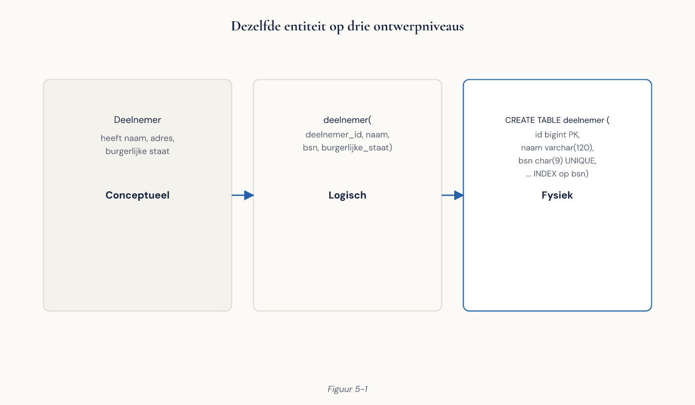
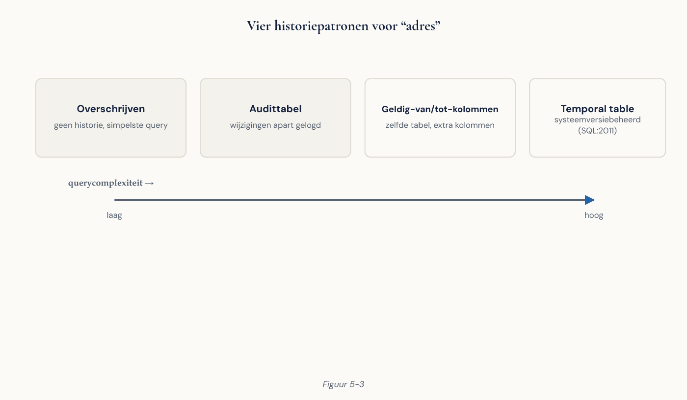

Deel 5 — Slidedeck
Datamodellering en normalisatie Niveau 1, dagdeel 5 | 38 slides
---scheidt slides. Notities: = spreektekst.
Slide 1 — Titel
Datamodellering
en normalisatie
Niveau 1 — Deel 5
Vier dagdelen gebruikten we deze database. Vandaag beoordelen we hem.
Slide 2 — Jullie wijzigingen
Notities: oogst de meegenomen aantekeningen uit deel 4. Op het bord, en laat ze de hele dag staan.
Slide 3 — De diagnose van deel 1, opnieuw
De schil bij Meridiaan is niet ontstaan doordat mensen slecht waren in SQL.
Hij is ontstaan doordat niemand
ooit vastlegde wat een deelnemer ís.
Slide 4 — Eén vraag die alles verklaart
Kan een deelnemer twee
gelijktijdige dienstverbanden hebben?
Notities: laat ze het in de casusdatabase opzoeken. Ja. En dáár komen de drie verschillende deelnemersaantallen uit deel 1 vandaan.
Slide 5 — Wat een model doet
- Het legt betekenis vast
- Het legt regels vast die de database afdwingt
- Het is een gespreksinstrument
Het rendement zit niet in de plaat. Het zit in de vragen die je moest stellen om hem te tekenen.
Slide 6 — Drie niveaus
| Beantwoordt | Voor wie | |
|---|---|---|
| Conceptueel | Wat bestaat er? | Business |
| Logisch | Hoe relationeel vastleggen? | Analisten |
| Fysiek | Hoe in PostgreSQL? | Ontwikkelaars, DBA |

Slide 7 — Eén regel voor het conceptuele model
Geen sleutels.
“Deelnemer heeft een deelnemer_id” is een implementatiekeuze, geen feit over de wereld.
Leg je het op tafel, dan gaat het gesprek over techniek.
Slide 8 — Entiteit of attribuut?
Twee toetsvragen:
- Kun je er meerdere van hebben?
- Wil je er meer over vastleggen?
Twee keer nee → attribuut.
Slide 9 — Woonplaats bij Meridiaan
Nu een attribuut. Gevolg (deel 3):
den haag · DEN HAAG · " Den Haag"
De vijf schrijfwijzen zijn geen
invoerprobleem. Ze zijn een modelprobleem.
Slide 10 — Kraaienpoot
| ` | ` |
O |
Nul — optioneel |
< |
Veel |
|| één · O| nul of één · |< één of meer · O< nul of meer

Slide 11 — Spreek beide richtingen uit
“Een werkgever heeft nul of meer dienstverbanden.” “Een dienstverband is bij precies één werkgever.”
Hardop. Zo hoort de business of het klopt.
Slide 12 — Optionaliteit is de discussie
Vraag bij elke relatie: kan dit er niet zijn?
- Deelnemer zonder dienstverband? Ja — slapers.
- Dienstverband zonder deelnemer? Nooit.
- Werkgever zonder deelnemers? Ja.
→ vertaalt rechtstreeks naar NOT NULL (deel 6)
Slide 13 — Opdracht 5.1 & 5.2
5.1 Entiteit of attribuut — 10 min 5.2 Cardinaliteit uitspreken — 10 min, tweetallen
Slide 14 — Van gesprek naar model
- Onderstreep de zelfstandige naamwoorden → entiteiten
- Onderstreep de werkwoorden → relaties
- Schift attributen eruit
- Let op signaalwoorden
“meerdere” → veel-op-veel “niet altijd” → optioneel “of hij heeft gewerkt” → historie
Slide 15 — Opdracht 5.3
Klantcontact bij Meridiaan
Teken het conceptuele model. Op papier.
25 min, drietallen
Slide 16 — Pauze
Slide 17 — Veel-op-veel
deelnemer ||──O< dienstverband >O──|| werkgever
Belangrijkste les: een koppeltabel is zelden alleen een koppeling.
Heeft hij een naam die de business gebruikt → het is een entiteit.
Heet hij deelnemer_werkgever → je hebt niet doorgevraagd.
Slide 18 — Functionele afhankelijkheid
A → B
Ken je A, dan ligt B vast.
Partieel — hangt af van een deel van de sleutel → 2NF Transitief — A → B → C → 3NF
Slide 19 — Het geheugensteuntje
Elk attribuut hangt af van
de sleutel,
de hele sleutel,
en niets dan de sleutel.
(Kent, 1983)
Slide 20 — 1NF
Eén waarde per cel, geen herhalende groepen.
| deelnemer | telefoonnummers |
|---|---|
| 1001 | 06-1234, 070-5678 |
Ook fout: telefoon_1, telefoon_2, telefoon_3
Slide 21 — En jsonb dan?
PostgreSQL schendt 1NF bewust — en dat mag soms.
jsonb voor wat je bewaart.
Kolommen voor wat je gebruikt.
Filteren, aggregeren, bewaken → kolommen.
Slide 22 — 2NF: de drie anomalieën
| werkgever_id | periode | werkgever_naam |
|---|---|---|
| 42 | 2025-01 | Van Dijk Bouw |
| 42 | 2025-03 | Van Dijk Bouw B.V. |
Wijziging — naam veranderen = 24 rijen Invoegen — nieuwe werkgever zonder nota kan niet Verwijderen — laatste nota weg = werkgever weg
Slide 23 — 3NF
| deelnemer | postcode | woonplaats |
|---|---|---|
| 1001 | 3511AB | Utrecht |
| 1002 | 3511AB | Utrect |
deelnemer → postcode → woonplaats
Niets houdt “Utrect” tegen.
Slide 24 — Waar theorie stopt en oordeel begint
Een postcodetabel betekent:
- een externe bron beheren die maandelijks wijzigt
- meestal een licentie
- buitenlandse adressen passen niet
Verdedigbare tussenweg: plaatsentabel zonder postcodelogica.
Slide 25 — Opdracht 5.4
Normaliseren
De tabel uit de oude Access-schil.
25 min, individueel
Slide 26 — Pauze
Slide 27 — Denormalisatie: drie voorwaarden
- Je hebt gemeten dat het genormaliseerde model niet voldoet
- Je hebt vastgelegd hoe het synchroon blijft
- Het staat in de documentatie
De onlegitieme reden die je overal hoort: “joins zijn traag”
Slide 28 — Twee keer een waarde kopiëren
A. Werkgeversnaam naar dienstverband
B. Jaarsalaris naar aanspraak
Eén is fout. Eén is juist.
Welke, en waarom?
Notities: laat de zaal het verschil zelf formuleren.
Slide 29 — Het antwoord
A is een kopie van een actuele waarde → redundantie
B is een historisch feit → het salaris zoals het tóén was
Veel schijnbare denormalisatie is in werkelijkheid een bewust bevroren moment.
Slide 30 — Opdracht 5.5
Denormalisatie beoordelen
Vijf voorstellen.
15 min, tweetallen
Slide 31 — Historie: drie soorten tijd
Geldigheidstijd — vanaf wanneer geldt dit? Registratietijd — vanaf wanneer weten wij het? Beslissingstijd — op welke kennis is toen besloten?
Slide 32 — De vraag die het model breekt
Welk adres had deze deelnemer
toen wij het UPO van 2023 verstuurden?
Antwoord in de huidige database: niet te achterhalen.
Bij een klacht is dat een probleem.
Slide 33 — Vier patronen
| Patroon | Kosten |
|---|---|
| Alleen huidige toestand | Geen historie |
| Geldig van/tot | Elke query heeft een peildatum |
| Aparte historietabel | Twee bronnen bevragen |
| Bitemporeel | Aanzienlijk complexer |
Kies per entiteit. Niet alles hoeft.

Slide 34 — En achteraf?
Historie toevoegen aan een model
dat er niet op gebouwd is,
komt neer op herbouwen.
Daarom is dit een conceptuele vraag.
Slide 35 — Opdracht 5.6
Historie ontwerpen
Adres en salaris met geldigheidsperiode.
20 min, drietallen
Slide 36 — De casus, beoordeeld
woonplaatsals vrij tekstveld- Geen adres, geen adreshistorie
- Aanspraak aan deelnemer, niet aan dienstverband
soortenkanaalals tekst met CHECK- Geen historie op
jaarsalaris - Geen entiteit voor het UPO
Slide 37 — De les van vandaag
De UPO-entiteit stond letterlijk in het gesprek:
“En we versturen elk jaar een overzicht, dat willen we ook kunnen terugvinden.”
Modelleerfouten ontstaan zelden door
verkeerd redeneren, en bijna altijd
door niet doorvragen.
Slide 38 — Opdracht 5.7 & volgende keer
5.7 Modelherzieningsvoorstel — 25 min, drietallen Prioriteer op risico, niet op zuiverheid. En noem één wijziging die je bewust níét doet.
Deel 6 — DDL, datatypen en constraints We bouwen wat jullie vandaag bedachten. Inclusief de constraint die je bij 5.6 miste.
Einde slidedeck deel 5.